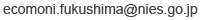

© 2024 National Institute for Environmental Studies
2023/3/1 制定
2023/6/28 一部改正
国立環境研究所の提供するウェブサイト とりトレをご利用いただいた場合は、本利用規約にご同意いただいたものとさせていただきます。
本規約では、以下の用語を使用します。
(1)NIES
国立環境研究所
(2)本ウェブサイト
とりトレ https://www.nies.go.jp/kikitori/tori-tore/index.html
本ウェブサイトに掲載されている情報の著作権は全てNIESに帰属します。ただし、画像データや音声ファイルの一部は、NPO法人バードリサーチ、xeno-canto に帰属します。本ウェブサイト全体、または一部についてNIESに無断で転載、複製等を行うことはできません。
本ウェブサイトを引用する場合は下記引用例を参考にしてください。
本ウェブサイトの利用およびそれに伴うデータ解釈により生じた直接的または間接的な損害に対して、NIESは一切責任を負いません。
本ウェブサイトは予告なく変更、停止することがあります。
インターネット通信料は自己負担となります。
クイズトレーニングに出題する種の頻度を一人ひとりに合わせてカスタマイズするため、および利用者の回答傾向およびトレーニングによる種判別能力向上の程度を評価するため、トレーニング、テストの回答履歴、アクセス時刻、IPアドレス、ブラウザ情報を収集します。また、取得されたデータは、解析を経て学術論文や報告書で用いられる可能性があります。上記の情報利用者は、研究責任者である国立環境研究所 深澤圭太と研究担当者です。情報の管理については、国立環境研究所が責任を有します。利用者の求めに応じて、個々の情報の利用を停止することができます。ご希望の場合、までご連絡ください。
とりトレを行うことによって、研究へ参加したこととなります。研究への参加（トレーニングとテストを受けること）は、対象者自身の自由意思によって決定され、参加に同意した後であっても、Webサイトにアクセスしないことでいつでも参加を取りやめることができ、そのことによって対象者が不利益を被ることはありません。質問がある場合は、までご連絡ください。
本ウェブサイトへのリンクは、原則として自由です。リンクの許可を得る必要はありません。リンクの際は本ウェブサイトの名称を明記の上、テキストによるリンクを表示してください。
例）<a href="https://www.nies.go.jp/kikitori/tori-tore/index.html">とりトレ</a>
© 2024 National Institute for Environmental Studies